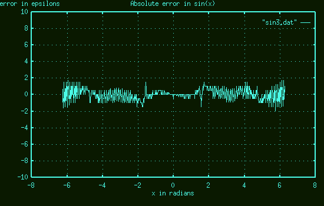

We checked the accuracy of most of the math functions by plotting a graph showing the abolute and relative errors over a relevant range of inputs.
The control values were calculated using the GNU version of 'bc'. Here is the code that generated the data for graph-sin.c.
p=4*a(1)
for (x=-2*p; x <= 2*p; x += 0.1 / sqrt(5)) {
y = s(x);
print " ", x, ", ", y, ",\n";
}
quit
The graphs may be plotted using 'gnuplot', of other suitable graph plotting program. Here is the absolute error plot from 'graph-sin.c'. The units on the vertical axis are epsilons. The graph shows that the error is less than two epsilons across the range from -2 pi to +2 pi.

Having run the program 'graph-sin' and saved the output in 'sin.dat', this graph was created using the following gnuplot command:
gnuplot> plot [] [-10:10] "sin.dat" with lines
To plot the relative error, use the first and third columns of data.
gnuplot> plot "sin.dat" using 1:3 with lines